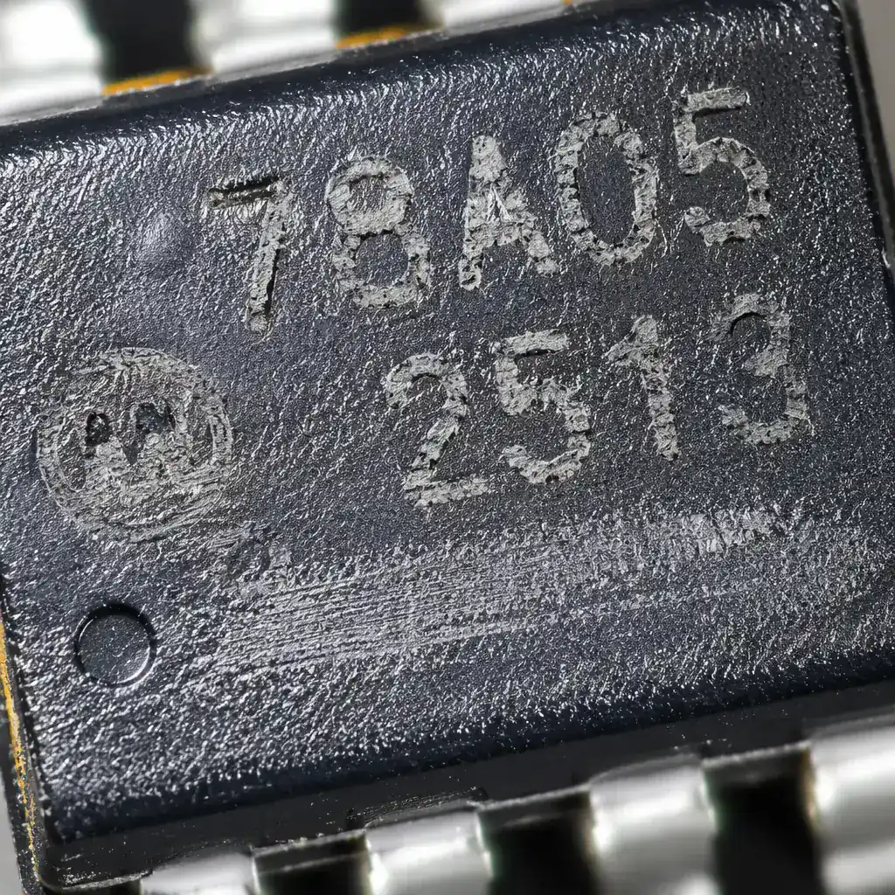
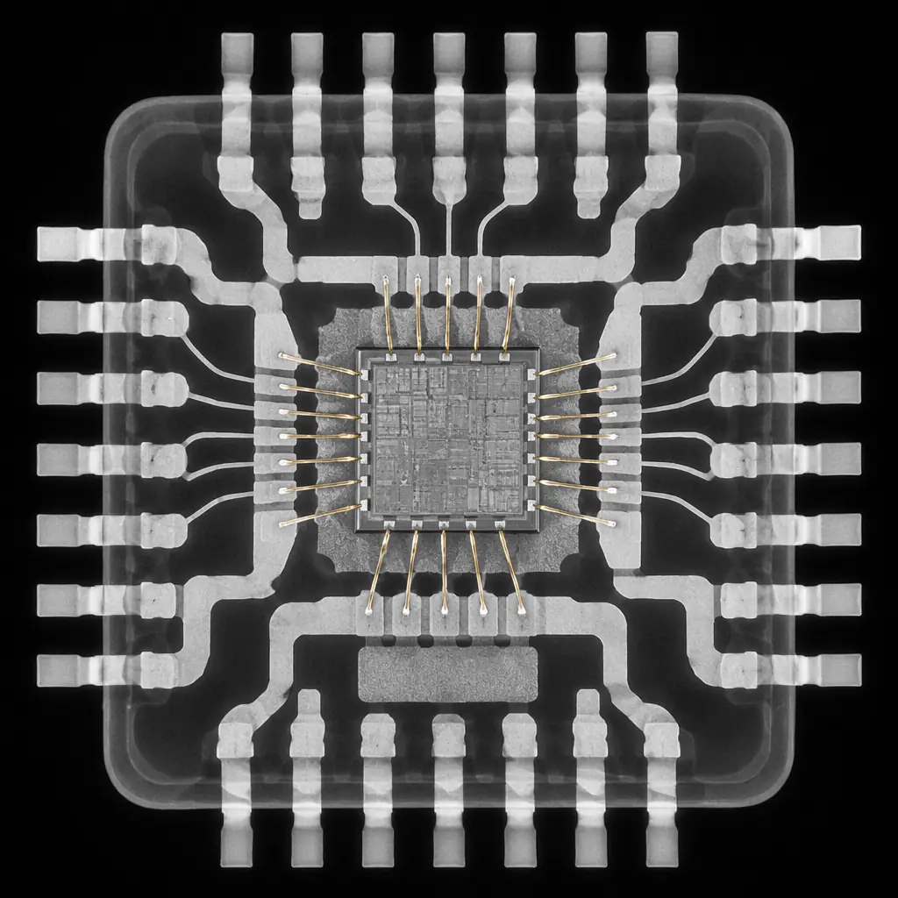

The Semiconductor Industry Association estimates that counterfeit electronics cost the global electronics industry over $75 billion per year. Counterfeit components — from re-marked ICs with lower specifications to refurbished parts sold as new — enter supply chains through unauthorized distributors, excess inventory brokers, and even compromised authorized channels. For a PCB procurement manager, a single batch of counterfeit components can cause field failures, safety recalls, and permanent damage to supplier relationships. The good news: a systematic authentication process using five complementary detection methods can identify over 95% of counterfeit parts before they ever touch a solder pad.
Huaxing PCBA operates a formal counterfeit avoidance program compliant with AS5553 (aerospace) and AS6081 (distribution) standards. Every component we procure goes through visual inspection at 40× magnification, X-ray comparison against a known-authentic golden sample, and full lot traceability documentation back to the original component manufacturer (OCM). For high-reliability programs, we add XRF material analysis and decapsulation inspection. Our supplier audit checklist includes a dedicated section on counterfeit risk assessment.

How Counterfeit Parts Enter the PCB Supply Chain
Understanding the entry points for counterfeit components is the first line of defense. Counterfeits enter through five primary channels, and each requires a different detection strategy:
Blacktopping and Re-Marking — The Most Common Counterfeit Method
The original component markings are sanded off and a new black epoxy coating ("blacktop") is applied with laser-etched new markings for a higher-grade part. A $0.50 commercial-grade MCU is re-marked as a $15 automotive-grade version. Detection: acetone or IPA solvent test dissolves the blacktop coating in under 30 seconds, revealing original markings underneath. Visual inspection at 40× reveals inconsistent surface texture, irregular laser etching depth, and misaligned pin-1 indicators. For critical ICs, our failure analysis guide covers decapsulation as the definitive verification method.
Refurbished / Pulled Parts Sold as New
Components desoldered from scrapped PCBs, cleaned, re-balled (for BGAs), and re-taped in counterfeit packaging. These parts have unknown thermal history — the internal wire bonds may have already experienced 2-3 reflow cycles, and the moisture sensitivity level (MSL) rating is void. Detection: X-ray inspection reveals internal wire bond deformation, die attach voiding from previous thermal cycles, and inconsistent solder ball shapes from manual re-balling. Cross-sectioning a sample shows intermetallic compound (IMC) layers 3-5× thicker than new parts, indicating prior reflow exposure. Our MSL handling guide explains why used parts with unknown MSL history are a latent defect risk.
Unauthorized Subcontractor Overproduction
An authorized assembly house over-produces components during a legitimate production run and diverts the excess to the gray market. These parts are functionally identical to authentic parts but have no warranty, no traceability, and no quality assurance from the OCM. Detection: lot traceability — the date code and lot code on the component must match the OCM's authorized shipment records. If the distributor cannot provide a verifiable traceability chain back to the OCM, the parts are considered suspect per AS5553.
PCB Substitution — Lower-Grade Laminates Passed Off as High-Performance
Counterfeit PCBs use standard FR-4 (Tg 130°C) marked as high-Tg FR-4 (Tg 170°C). The visual difference is zero — the boards look identical. But when they hit 150°C during operation, the standard laminate delaminates. Detection: differential scanning calorimetry (DSC) to measure actual glass transition temperature, and TGA (thermogravimetric analysis) to measure decomposition temperature. Cross-section inspection reveals resin system differences under polarized light. Our laminate selection guide covers material verification methods for high-reliability PCBs.
Industry Data: The ERAI (Electronic Resellers Association International) database tracks over 2,500 new counterfeit incident reports per year. The top 5 most-counterfeited component types: analog ICs (28%), memory ICs (22%), microprocessors/MCUs (18%), transistors/MOSFETs (15%), and capacitors (10%). Components in shortage are counterfeited at 4× the normal rate — when lead times stretch past 26 weeks, counterfeit risk escalates exponentially.
The 5-Layer Counterfeit Detection Protocol
Effective counterfeit detection is a layered defense. No single test catches everything, but the combination of all five layers provides >95% detection confidence. For procurement teams, at least the first three layers should be specified as mandatory incoming inspection requirements in your supplier quality agreement:
External Visual Inspection (40×-100× Magnification)
Check body dimensions against the manufacturer's datasheet (±0.1mm tolerance). Inspect surface texture under oblique lighting — blacktopping leaves a different gloss level and often shows sanding marks. Verify marking permanency with IPA + cotton swab rub test (MIL-STD-883 Method 2015). Examine pin-1 indicator consistency — counterfeiters often misplace or omit the dimple/bevel. Document all findings with digital images. Standard: IDEA-STD-1010 visual acceptance criteria. See our incoming inspection guide for the full visual checklist.
X-Ray Internal Structure Comparison
Compare the internal lead frame, die attach, and wire bond structure against a known-authentic golden sample. Counterfeit ICs often show: different die size (smaller or larger), wire bonds of different material or loop profile, inconsistent lead frame geometry, and die attach voiding pattern differences. X-ray is 100% effective at detecting refurbished BGAs — the solder ball array pattern and collapse profile of re-balled parts never perfectly matches an original. Our BGA guide shows authentic vs counterfeit BGA X-ray images.
XRF (X-Ray Fluorescence) Material Composition Analysis
Verify that the lead finish, terminal plating, and package material composition match the manufacturer's specification. Common discrepancies: RoHS-compliant parts with lead detected in the terminal finish (>1000 ppm), pure tin plating where matte tin was specified, and gold-plated leads with inadequate gold thickness. XRF is non-destructive and takes under 60 seconds per part — it can be performed on 100% of incoming lots for high-risk component types. Our RoHS compliance guide specifies accepted material thresholds.
Decapsulation & Die Inspection (Destructive, Sampling Basis)
Acid decapsulation removes the plastic package to expose the silicon die. Verify: die markings match the OCM's die database, die size matches the datasheet die dimensions, and bond pad layout matches the known-authentic die. Counterfeit dies often show: different manufacturer logo, different die revision, extra bond pads or missing bond pads, and die size discrepancies >5%. Sample rate: 2 parts per lot for high-reliability, 1 per lot for commercial per AS6081.
Document Traceability — The Paper Trail Defense
Every component lot must have a complete chain of custody from OCM to your receiving dock. Required documents: OCM Certificate of Conformance (CoC) with date code and lot code, authorized distributor purchase order, packing slip with distributor's own lot traceability number, and test reports if value-added testing was performed. Cross-check: the date code on the component must be ≤2 years from the CoC date. Date codes older than 2 years from the CoC date are a red flag for refurbished parts. Our certifications guide covers document verification requirements for each industry.

Supply Chain Security: Preventing Counterfeits Before Detection Is Necessary
The most cost-effective counterfeit strategy is prevention — building a supply chain that makes counterfeits nearly impossible to introduce. This requires procurement discipline in three areas:
Buy Only from Authorized Sources — No Exceptions for Shortage Parts
Authorized distributors (Arrow, Avnet, Future, DigiKey, Mouser) have contractual traceability back to the OCM. Independent brokers and excess inventory dealers do not — and during component shortages, the counterfeit rate at independent sources spikes to 5-15%. If a part is only available through independent channels during allocation, the cost of counterfeit detection (layers 1-5 above) must be added to the component cost. See our obsolescence management guide for legitimate alternatives to broker sourcing.
Implement a Closed-Loop Lot Traceability System
Every component reel, tray, or tube receives a unique lot identifier at receiving inspection. This identifier follows the component through storage, kitting, SMT placement, and into the finished PCB serial number record. If a counterfeit batch is discovered at any point, the lot traceability system identifies every PCB containing parts from that lot within minutes, not days. Our dual sourcing guide explains how to manage traceability across multiple suppliers.
PCB Fabricator Transparency — Demand Material Certificates
For the PCB itself (not just components), require the fabricator to provide laminate manufacturer certificates with lot numbers, UL file numbers for the specific laminate construction, and a cross-section micrograph of the delivered board showing copper thickness on each layer. A fabricator who cannot provide these three documents within 24 hours of request does not have supply chain control over their laminate procurement. Our laminate selection guide includes a material certificate verification checklist.
Building a Counterfeit Mitigation Program: Standards and Certification
For organizations procuring PCBs and components for regulated industries, a formal counterfeit mitigation program is not optional — it is a contractual requirement. The governing standards are:
| Standard | Scope | Key Requirements |
|---|---|---|
| AS5553 | Aerospace — counterfeit electronic parts avoidance | Authorized supply chain only; documented detection plan; personnel training; reporting to GIDEP |
| AS6081 | Distribution — counterfeit detection for independent distributors | Visual inspection, X-ray, XRF, decapsulation on sampling basis; full traceability documentation |
| AS6171 | Test & inspection methods for suspect/counterfeit parts | Specific test procedures for each detection method with acceptance criteria |
| IDEA-STD-1010 | Visual acceptability of electronic components | Detailed photos of acceptable vs rejectable conditions for marking, lead condition, body integrity |
| ISO 9001:2015 §8.4 | General — control of externally provided processes | Supplier evaluation, selection, monitoring; documented criteria for component acceptance |
Procurement Insight: When shortlisting PCB assembly partners, ask: "Show me your AS5553 counterfeit avoidance plan." Even if your product is not aerospace, a supplier who has implemented AS5553-level controls has the infrastructure to protect any customer's supply chain. The key indicator: do they have an in-house X-ray system and a documented golden sample library for frequently-used components? If the answer to either is "we outsource that," counterfeit risk is higher than it should be.
Summary: Counterfeit Detection as a Procurement Competency
Counterfeit parts are not a distant risk — they are a daily reality in global electronics procurement. The five-layer detection protocol (visual → X-ray → XRF → decapsulation → document traceability) provides a structured defense that, when consistently applied, catches over 95% of counterfeits before they enter production. But detection alone is not enough: the real competitive advantage comes from building a supply chain where counterfeits cannot enter in the first place.
At Huaxing PCBA, we source every component through authorized channels with full lot traceability back to the OCM. Our incoming inspection includes 40× visual on 100% of lots, X-ray verification on all BGA and QFN packages, and XRF spot-checking on high-risk part numbers. We maintain a golden sample library of over 300 commonly-used ICs for X-ray comparison. Use our supplier audit checklist to evaluate your current assembly partner's counterfeit defenses, or contact our procurement team to discuss your component sourcing strategy.